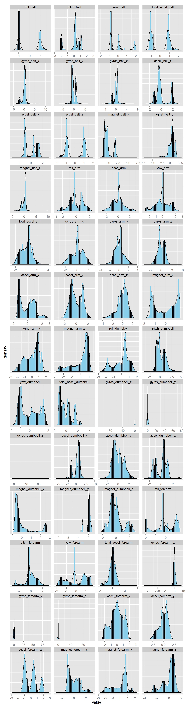
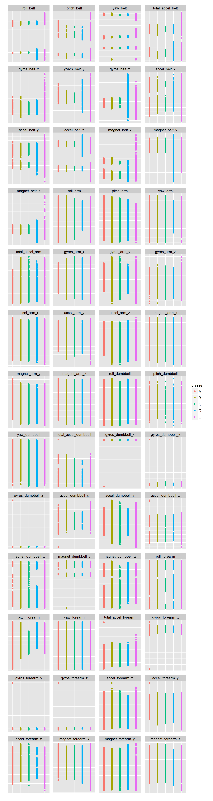
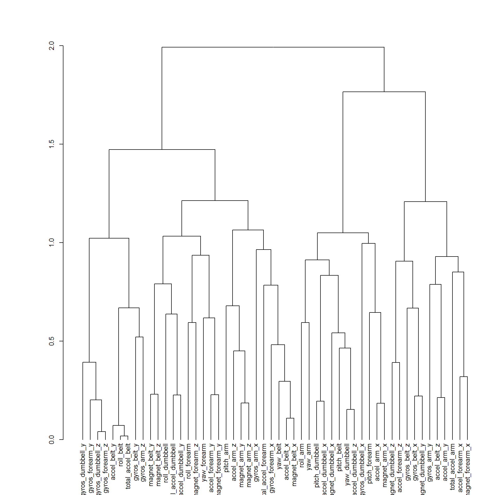

Load libraries:
knitr::opts_chunk$set(cache=TRUE, cache.lazy=FALSE, fig.width=10, fig.height=7, tidy=TRUE)
library(caret)## Loading required package: lattice
## Loading required package: ggplot2library(dplyr)##
## Attaching package: 'dplyr'
##
## The following object is masked from 'package:stats':
##
## filter
##
## The following objects are masked from 'package:base':
##
## intersect, setdiff, setequal, unionlibrary(reshape2)
library(knitr)Load data:
data <- read.csv("data/pml-training.csv")
training.idx <- createDataPartition(y = data$classe, p = 0.6, list = FALSE)
training.set <- data[training.idx, ]
test.set <- data[-training.idx, ]
unclassified <- read.csv("data/pml-testing.csv")Remove features with NA values:
na.features.training <- colnames(training.set)[apply(training.set, 2, function(x) sum(is.na(x))) >
0]
na.features.unclassified <- colnames(unclassified)[apply(unclassified, 2, function(x) sum(is.na(x))) >
0]
na.features <- union(na.features.training, na.features.unclassified)
training.set <- training.set[, !(colnames(training.set) %in% na.features)]
unclassified <- unclassified[, !(colnames(unclassified) %in% na.features)]
print(kable(data.frame(features = na.features), col.names = c("features with NA values"),
caption = "Removed the following NA-containing features:"))##
##
## Table: Removed the following NA-containing features:
##
## features with NA values
## -------------------------
## max_roll_belt
## max_picth_belt
## min_roll_belt
## min_pitch_belt
## amplitude_roll_belt
## amplitude_pitch_belt
## var_total_accel_belt
## avg_roll_belt
## stddev_roll_belt
## var_roll_belt
## avg_pitch_belt
## stddev_pitch_belt
## var_pitch_belt
## avg_yaw_belt
## stddev_yaw_belt
## var_yaw_belt
## var_accel_arm
## avg_roll_arm
## stddev_roll_arm
## var_roll_arm
## avg_pitch_arm
## stddev_pitch_arm
## var_pitch_arm
## avg_yaw_arm
## stddev_yaw_arm
## var_yaw_arm
## max_roll_arm
## max_picth_arm
## max_yaw_arm
## min_roll_arm
## min_pitch_arm
## min_yaw_arm
## amplitude_roll_arm
## amplitude_pitch_arm
## amplitude_yaw_arm
## max_roll_dumbbell
## max_picth_dumbbell
## min_roll_dumbbell
## min_pitch_dumbbell
## amplitude_roll_dumbbell
## amplitude_pitch_dumbbell
## var_accel_dumbbell
## avg_roll_dumbbell
## stddev_roll_dumbbell
## var_roll_dumbbell
## avg_pitch_dumbbell
## stddev_pitch_dumbbell
## var_pitch_dumbbell
## avg_yaw_dumbbell
## stddev_yaw_dumbbell
## var_yaw_dumbbell
## max_roll_forearm
## max_picth_forearm
## min_roll_forearm
## min_pitch_forearm
## amplitude_roll_forearm
## amplitude_pitch_forearm
## var_accel_forearm
## avg_roll_forearm
## stddev_roll_forearm
## var_roll_forearm
## avg_pitch_forearm
## stddev_pitch_forearm
## var_pitch_forearm
## avg_yaw_forearm
## stddev_yaw_forearm
## var_yaw_forearm
## kurtosis_roll_belt
## kurtosis_picth_belt
## kurtosis_yaw_belt
## skewness_roll_belt
## skewness_roll_belt.1
## skewness_yaw_belt
## max_yaw_belt
## min_yaw_belt
## amplitude_yaw_belt
## kurtosis_roll_arm
## kurtosis_picth_arm
## kurtosis_yaw_arm
## skewness_roll_arm
## skewness_pitch_arm
## skewness_yaw_arm
## kurtosis_roll_dumbbell
## kurtosis_picth_dumbbell
## kurtosis_yaw_dumbbell
## skewness_roll_dumbbell
## skewness_pitch_dumbbell
## skewness_yaw_dumbbell
## max_yaw_dumbbell
## min_yaw_dumbbell
## amplitude_yaw_dumbbell
## kurtosis_roll_forearm
## kurtosis_picth_forearm
## kurtosis_yaw_forearm
## skewness_roll_forearm
## skewness_pitch_forearm
## skewness_yaw_forearm
## max_yaw_forearm
## min_yaw_forearm
## amplitude_yaw_forearmRemove features deemed insignificant (based on common sense and lack of association with target variable):
conttable.user_name <- table(training.set$user_name, training.set$classe)
print(conttable.user_name)##
## A B C D E
## adelmo 716 475 476 306 423
## carlitos 508 419 287 287 367
## charles 546 445 332 394 411
## eurico 508 351 286 332 342
## jeremy 696 290 370 315 330
## pedro 374 299 303 296 292chisq.test(conttable.user_name)##
## Pearson's Chi-squared test
##
## data: conttable.user_name
## X-squared = 153.5589, df = 20, p-value < 2.2e-16# user_name feature will be removed even though there is some association
# with the target variable, since prediction should not be based on this
# feature
conttable.new_window <- table(training.set$new_window, training.set$classe)
conttable.new_window##
## A B C D E
## no 3283 2232 2015 1882 2113
## yes 65 47 39 48 52fisher.test(conttable.new_window)##
## Fisher's Exact Test for Count Data
##
## data: conttable.new_window
## p-value = 0.5426
## alternative hypothesis: two.sidedinsignificant.features <- c("X", "user_name", "raw_timestamp_part_1", "raw_timestamp_part_2",
"cvtd_timestamp", "new_window", "num_window")
training.set <- training.set[, !(colnames(training.set) %in% insignificant.features)]
unclassified <- unclassified[, !(colnames(unclassified) %in% insignificant.features)]Since the range of values is significantly different between features, each feature is normalized:
# exclude categorical target feature from normalization
training.set.features <- as.matrix(training.set[, 1:(ncol(training.set) - 1)])
training.set.norm <- data.frame(apply(training.set.features, 2, function(x) {
feature.mean <- mean(x)
feature.sd <- sd(x)
return(apply(as.matrix(x), 1, function(y) {
return((y - feature.mean)/feature.sd)
}))
}))
training.set.norm$classe <- training.set$classeggplot(melt(training.set.norm), aes(value)) + geom_histogram(aes(y = ..density..),
colour = "black", fill = "skyblue") + geom_density() + facet_wrap(~variable,
scales = "free", ncol = 4) + theme(axis.text.y = element_blank(), axis.ticks.y = element_blank())
ggplot(melt(training.set.norm), aes(x = classe, y = value, colour = classe)) +
geom_point() + facet_wrap(~variable, scales = "free", ncol = 4) + theme(axis.text = element_blank(),
axis.ticks = element_blank(), axis.title = element_blank())
Distance metric:: \(1 - \rho\) (Pearson product-moment correlation coefficient)
dendro <- as.dendrogram(hclust(as.dist(1 - cor(training.set.features, method = "pearson")),
method = "complete"))
par(cex = 0.8, mar = c(5, 8, 4, 1))
plot(dendro)
Prepare folds for cross-validation:
cv <- trainControl(method = "repeatedcv", repeats = 2)training.set.norm <- training.set.norm[sample.int(nrow(training.set.norm), size = 300,
replace = FALSE), ]
training.set.norm <- training.set.norm[, c(1:10, ncol(training.set.norm))]
fit <- train(classe ~ ., data = training.set.norm, method = "rf", trControl = cv,
prox = TRUE)Prediction accurracy on training data (in sample error):
prediction.training <- predict(fit, training.set.norm)
tbl <- table(prediction.training, training.set.norm$classe)
tbl##
## prediction.training A B C D E
## A 95 0 0 0 0
## B 0 58 0 0 0
## C 0 0 47 0 0
## D 0 0 0 45 0
## E 0 0 0 0 55Accuracy:
sum(diag(nrow(tbl)) * tbl)/sum(tbl)## [1] 1Baseline accuracy:
max(table(training.set.norm$classe))/sum(table(training.set.norm$classe))## [1] 0.3166667Remove NA-containing features and insignificant features:
test.set <- test.set[, !(colnames(test.set) %in% na.features)]
test.set <- test.set[, !(colnames(test.set) %in% insignificant.features)]Perform normalization of test set values based on mean and standard deviation of training set values:
# exclude categorical target feature from normalization
test.set.features <- as.matrix(test.set[, 1:(ncol(test.set) - 1)])
# calculate mean and sd of training set features:
training.set.features <- as.matrix(training.set[, 1:(ncol(training.set) - 1)])
feature.characteristics <- data.frame(apply(training.set.features, 2, function(x) {
return(c(mean(x), sd(x)))
}))
i <- 1
test.set.norm <- data.frame(apply(test.set.features, 2, function(x) {
feature.mean <- feature.characteristics[1, i]
feature.sd <- feature.characteristics[2, i]
i <<- i + 1
return(apply(as.matrix(x), 1, function(y) {
return((y - feature.mean)/feature.sd)
}))
}))
test.set.norm$classe <- test.set$classePrediction accurracy on test data (in sample error):
prediction.test <- predict(fit, test.set.norm)
tbl <- table(prediction.test, test.set.norm$classe)
tbl##
## prediction.test A B C D E
## A 1844 282 310 371 235
## B 111 950 189 84 36
## C 80 139 706 170 15
## D 99 18 88 580 152
## E 98 129 75 81 1004Accuracy:
sum(diag(nrow(tbl)) * tbl)/sum(tbl)## [1] 0.6479735Baseline accuracy:
max(table(test.set.norm$classe))/sum(table(test.set.norm$classe))## [1] 0.2844762Perform normalization of unclassified values based on mean and standard deviation of training set values:
# exclude problem id feature from normalization
unclassified.features <- as.matrix(unclassified[, 1:(ncol(unclassified) - 1)])
i <- 1
unclassified.norm <- data.frame(apply(unclassified.features, 2, function(x) {
feature.mean <- feature.characteristics[1, i]
feature.sd <- feature.characteristics[2, i]
i <<- i + 1
return(apply(as.matrix(x), 1, function(y) {
return((y - feature.mean)/feature.sd)
}))
}))